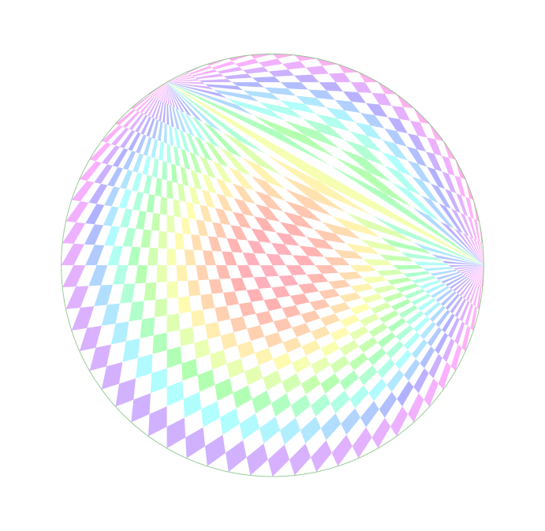
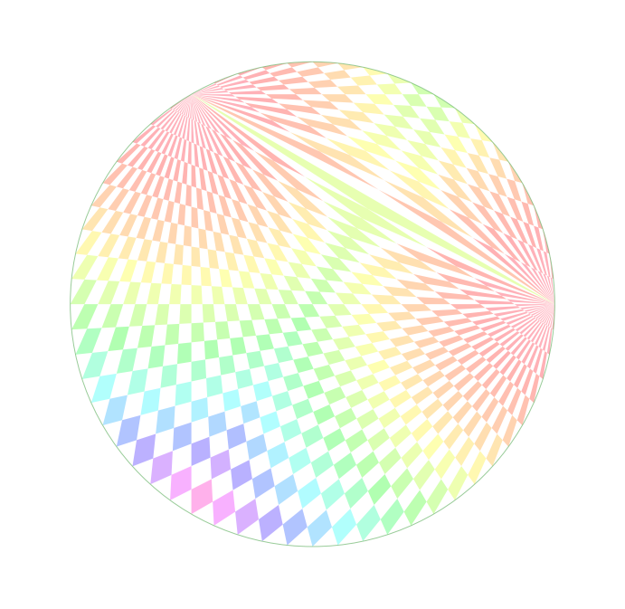
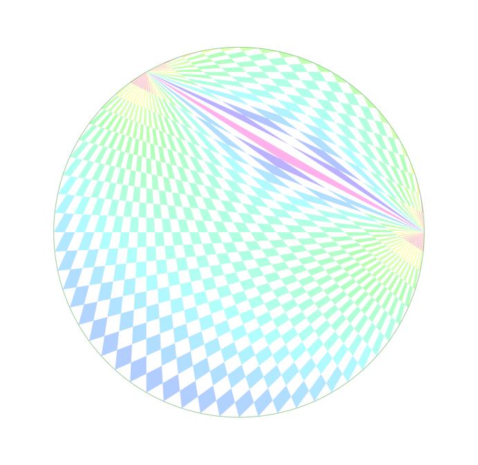
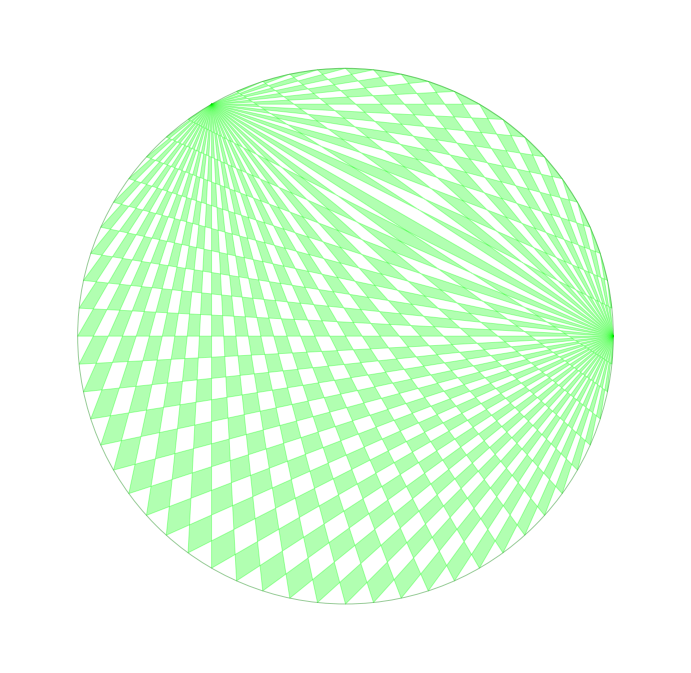
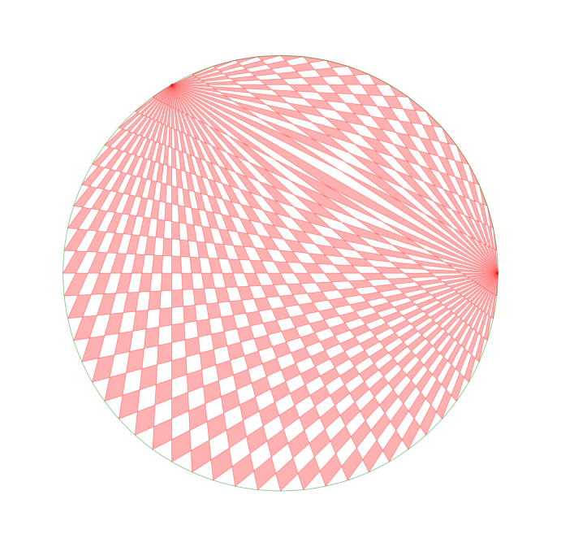
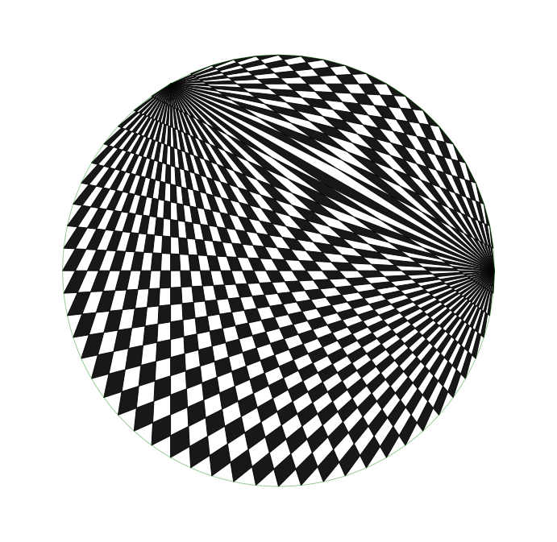
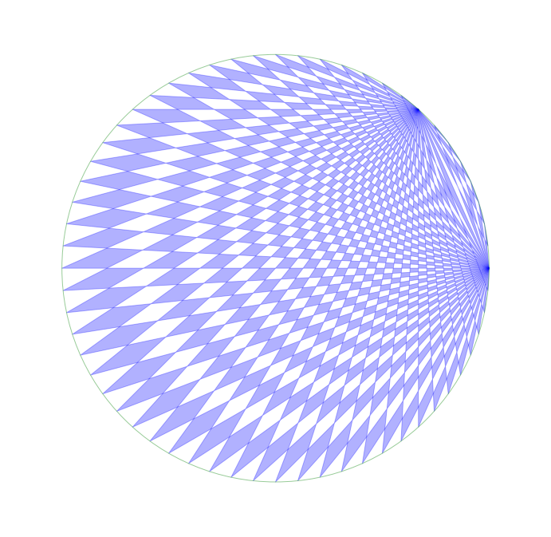
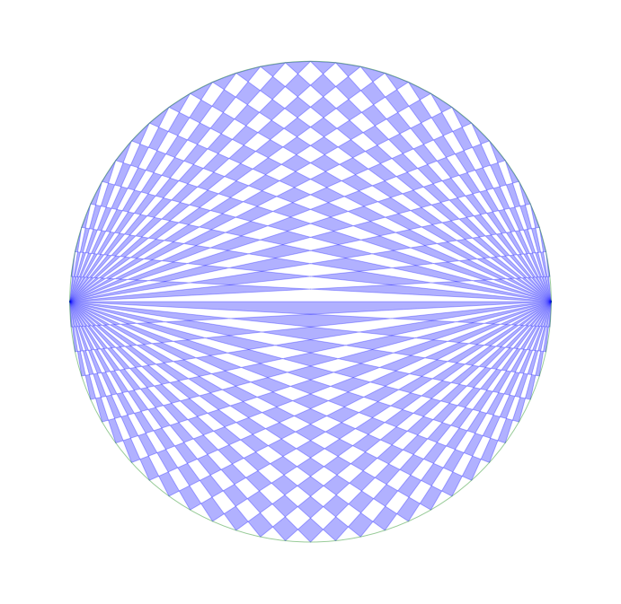
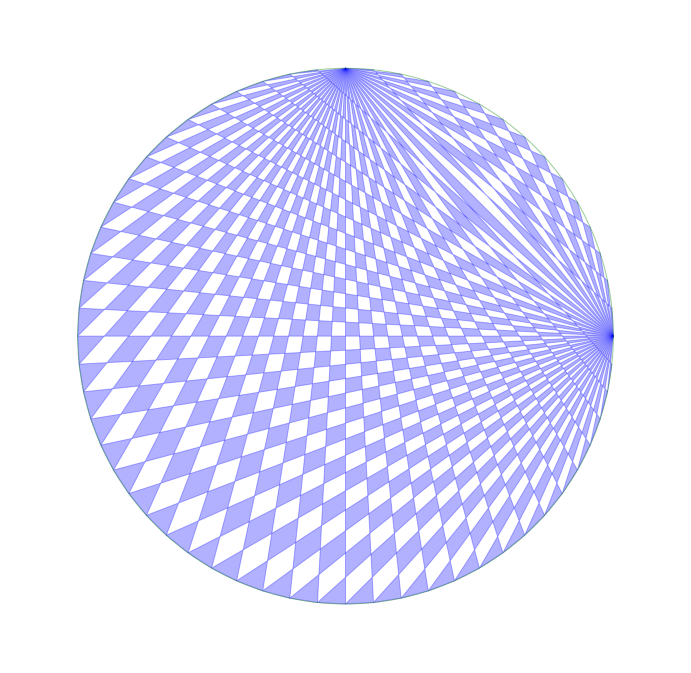

1. Introduction
This post belongs to a new series of posts where I intend to face the challenge of drawing both static and dynamic pictures with a programming language. This practise is commonly referred to as code art, where art is built with code.
The first four posts will aim at defining a function to create a geometric pattern, a spirograph pattern in circle, inspired by this video, with Python libraries.
We will follow these steps:
- Problem definition and visualization basics in Part1.
- Line definition through two points and intersection of two lines in Part2.
- Polygon vertex detection and postprocessing of intersection points Part3.
- Polygon drawing, colour scheme definition, global function implementation and final drawings in Part4.
2. Draw the polygon with a chess texture
We want to colour the grid in a chess fashion.
The grid is built by connecting two adjacent points on the circle at index ka clockwise with respect to the first generator A and two other adjacent points at index kb anticlockwise with respect to the second generator B.
The logic to colour the grid is the following:
- if the polygon lies on the left-hand side of the vector connecting A to B, we use an alternate pattern, i.e., if
kais even, we fill the polygon for each oddkb, ifkais odd, we fill the polygon for each evenkb. - Contrarily, if the polygon lies on the right-hand side, we use the opposite pattern, namely we draw if both
kaandkbare either even or odd.
If a number n is even, the modulus operation n%2, which gives the remainder of the left value n divided by the right value 2, returns 0. Otherwise, it returns 1.
A compact way to check the two above situations for the RHS case is (kb+1-(ka%2))%2 == 0.
In the first case, (ka%2) is 0 since ka is even. (kb+1-(ka%2)) becomes (kb+1).
The quantity (kb+1)%2 == 0 is true only if the left value of the modulus kb+1 is even. That finally implies that kb needs to be odd.
Similarly, in the second case, ka is odd and (ka%2) becomes 1; (kb+1-(ka%2)) becomes (kb+1-1) = kb.
The quantity kb%2 == 0 is true only if kb is even.
The polygon lies on the right-hand side of the vector connecting A to B if ka has reached the index of B anticlockwise:
$$ idx_{AB} = Npnt - [\theta_{AB}\cdot\pi/180] -1 $$
We introduce the 1 bias only for the RHS case, which occurs when ka >= (Npnts-idxAB-1).
The variable chessOrder equals 1 and 0 for RHS and LHS, respectively (1 if ka>=(Npnts-idxAB-1) else 0)
This logic is applied for the two nested for loops of ka and kb and its values stored to isDraw.
The heavier computation to determine the polygon coordinates is thus executed only if isDraw is true.
3. Colour scheme
There are many interesting ways to colour this texture.
3.1 Fix colour scheme
One simple way could be to set the same colour for each polygon.
This is very easy to do in Matplotlib as pc.set_color([0, 0, 0]), where pc is the patch collection and the 1D array is the RGB colour code.
3.2 Distance-from-origin-based colour scheme
A second way could be to develop a colour function that returns a score proportional to the distance from the origin centrDist = np.sum(centroid**2).
The patches are then coloured with solid fill but their colours are picked from a colour palette with respect to the scores stored in the colors list (colors.append(centrDist)), as pc.set_array(np.array(colors)).
3.3 Area-based colour scheme
A third way is to assign colours from the same palette with respect to the polygon area instead of the distance from origin.
To calculate the area of a 3-vertex polygon we use the cross product property:
$$ |\vec{AB}\times \vec{AC}| = AB\cdot AC\sin\theta = 2\cdot area(ABC) $$
where $\theta$ is the angle between the two vectors.
Below we take the first three vertexes from polygCoord2 and write them to poly3vert.
The first segment AB is the vertical difference between the first two rows, the second segment AC is the difference between the third and first rows.
The cross product gives double the magnitude of the area.
poly3vert = polygCoord2[:3,:]
def poly3area(poly3vert):
AB = np.diff(poly3vert[:2,:], axis=0)
AC = np.diff(poly3vert[[0, 2],:], axis=0)
return np.cross(AB, AC)[0]/2
area = poly3area(poly3vert)
print('From this 3 vertexes\n{}\nwe get the following area: {:.2f}'.format(poly3vert, area))
From this 3 vertexes
[[-6. -1.5]
[-3. -1. ]
[-4. 1.5]]
we get the following area: 4.00
To calculate the area of a 4-vertex polygon, we split it into two adjacent 3-vertex polygons and apply the same procedure as above.
$$ area(ABCD) = area(ABD) + area(BCD) = $$
$$ = \frac{1}{2}\cdot(|\vec{AB}\times \vec{AD}| + |\vec{BC}\times \vec{BD}|) $$
The segment AB is the vertical difference between the first two rows, AD is the difference between the last and first rows, BC between the third and second rows and BD between the last and second and rows.
poly4vert = polygCoord2.copy()
def poly4area(poly4vert):
areaABD = poly3area(poly4vert[[0, 1, -1], :])
areaBCD = poly3area(poly4vert[[1, 2, -1], :])
return areaABD+areaBCD
area = poly4area(poly4vert)
print('From this 4 vertexes\n{}\nwe get the following area: {:.2f}'.format(poly4vert, area))
From this 4 vertexes
[[-6. -1.5]
[-3. -1. ]
[-4. 1.5]
[-5. 1. ]]
we get the following area: 5.00
The patches are then coloured with solid fill with colours picked from the palette according to the area.
3.4 Distance-from-generators-based colour scheme
A fourth way is to assign a colour proportional to the minimum distance from the origin generDist.
The patches are then coloured with solid fill with colours from palette with respect to such a distance.
distGenerA = np.sum((centroid-np.array(Pa))**2)
distGenerB = np.sum((centroid-np.array(Pb))**2)
generDist = min(distGenerA, distGenerB)
4. Final function development
We develop the general function which is responsible to draw the spirograph pattern art in circle.
The hyperparameters are:
radius, the circle radiusNpnt, the number of points over the circlealpha_ab, the angular distance from A to B (degrees)kind, the kind of colour scheme, which can be one among generator-distance basedgenDist, fix-colourfix-(green|red|blue|gray|black), polygon-area-basedareaand origin-distance-basedorigiDistschemes.figSize, the figure sizepalette, the colour palette from Matplotlib.patchAlpha, the polygon colour transparency.
We use some functions to make the drawing code more compact.
From the indexes ka and kb we get the coordinates of the two pairs of adjacent points that are then connected to the two generators to design the polygon. This logic is in index2coords.
When we have the coordinates of the 4 points (A, B, C, D) we calculate the coordinates of the intersecting points with seg2intersection.
def index2coords(theta_A, theta_B, radius, Lseg, ka=0, kb=0):
theta_Cs = theta_A - (np.r_[ka, ka+1]+1)*Lseg
Pcs = np.array(polar2cartesian(theta_Cs, radius)).T
CCs = np.repeat(Pcs, 2, axis=0)
theta_Ds = theta_B + (np.r_[kb, kb+1]+1)*Lseg
Pds = np.array(polar2cartesian(theta_Ds, radius)).T
DDs = np.tile(Pds, (2,1))
return CCs, DDs
def seg2intersection(AAs, BBs, CCs, DDs):
toHomCoords = lambda pnts: np.hstack((pnts, np.ones((4, 1))))
AHs = toHomCoords(AAs)
BHs = toHomCoords(BBs)
CHs = toHomCoords(CCs)
DHs = toHomCoords(DDs)
L1 = np.cross(AHs, CHs)
L2 = np.cross(BHs, DHs)
PIHs = np.cross(L1, L2) # homogeneous coordinates for intersecting point
xIHs, yIHs, zIHs = np.split(PIHs, 3, axis=1)
paralSeg = np.abs(zIHs)<1e-5
zIHs[paralSeg] = 1
xIs, yIs = xIHs/zIHs, yIHs/zIHs
xIs, yIs = xIs[paralSeg==0], yIs[paralSeg==0]
polygonalPoints = np.vstack((xIs, yIs)).T
return polygonalPoints
The filtering process to get rid of duplicates and points outside the circle, is in pointFiltering.
The polygon is anticlockwise sorted in polygonSorting.
Its area is determined with poly3area if it has 3 vertexes or with poly4area if it has 4 vertexes.
def pointFiltering(polygonalPoints, radius):
polygonalPoints1 = np.unique(np.around(polygonalPoints, decimals=6), axis=0)
distance = np.sqrt(np.sum(polygonalPoints1**2, axis=1))
criteria = np.around(distance, decimals=3)<=radius
return polygonalPoints1[criteria, :]
def polygonSorting(polygonalPoints):
centroid = np.mean(polygonalPoints, axis=0)
polygCoord_ = list(polygonalPoints)
polygCoord_.sort(key=lambda pnt: math.atan2(pnt[1]-centroid[1], pnt[0]-centroid[0]))
return np.array(polygCoord_), centroid
def poly3area(poly3vert):
AB = np.diff(poly3vert[:2,:], axis=0)
AC = np.diff(poly3vert[[0, 2],:], axis=0)
return np.cross(AB, AC)[0]/2
def poly4area(poly4vert):
areaABD = poly3area(poly4vert[[0, 1, -1], :])
areaBCD = poly3area(poly4vert[[1, 2, -1], :])
return areaABD + areaBCD
The patch colour can be defined with many criteria:
fix-(green|red|blue|gray|black), where every polygon colour is same and equal to what user selects in the available listarea, where the colour is related to the polygon areagenDist, where the colour is proportional to the minimum distance from any of the two generators.origiDist, where the colour is proportional to the distance from the origin.
For cases 2-4, the colour is chosen from a palette by Matplotlib, according to the polygon score that is assigned with the function colorCriteria.
def colorCriteria(polygs, centroid, kind):
if kind=='area':
area = poly3area(polygs) if polygs.shape[0]==3 else poly4area(polygs) # polygon area
score = np.log(area)
elif kind=='originDist':
score = np.sum(centroid**2) # square distance from origin
elif kind=='genDist':
distGenerA = np.sum((centroid-np.array(Pa))**2)
distGenerB = np.sum((centroid-np.array(Pb))**2)
score = min(distGenerA, distGenerB) # minimum square distance from any of the two generators
else:
score = 0
return score
The final drawing logic is placed in drawingSpirograph, where the 4 hyperparameters are assigned.
Here a list of different colormaps available in Matplotlib.
def drawingSpirograph(Npnts=20, alpha_ab=120, kind = 'fix-green', figSize = 5, radius=1, palette='RdYlBu', patchAlpha=.3):
margin = radius * 1.25
#kind = 'genDist' # fix-green, area, originDist, genDist
colDict = {'green': [0, 1, 0], 'red': [1, 0, 0], 'blue': [0, 0, 1], 'gray': [.5, .5, .5], 'black': [0, 0, 0]}
Lseg = 2*np.pi/Npnts
theta_A = 0
idxAB = int(np.round(alpha_ab/180*np.pi/Lseg))
theta_B = np.round((theta_A+alpha_ab/180*np.pi)/Lseg)*Lseg
Pa = polar2cartesian(theta_A, radius)
Pb = polar2cartesian(theta_B, radius)
AAs = np.tile(np.array(Pa), (4,1))
BBs = np.tile(np.array(Pb), (4,1))
plt.figure(figsize=(figSize, figSize))
circle = plt.Circle((0, 0), radius, color='g', fill=False, alpha=.4, lw=1)
patches, patchColors = [], []
for ka in range(Npnts-2):
for kb in range(Npnts-2):
chessOrder = 1 if ka>=(Npnts-idxAB-1) else 0
isDraw = (kb-(ka%2)+chessOrder)%2 == 0
if isDraw:
CCs, DDs = index2coords(theta_A, theta_B, radius, Lseg, ka, kb)
polygonalPoints = seg2intersection(AAs, BBs, CCs, DDs)
polygonalPoints2 = pointFiltering(polygonalPoints, radius)
if polygonalPoints2.shape[0]>=3:
polygonalPoints3, centroid = polygonSorting(polygonalPoints2)
centrDist = np.sum(centroid**2)*100
polygon = Polygon(np.array(polygonalPoints3), True)
patches.append(polygon)
if not kind.startswith('fix'):
score = colorCriteria(polygonalPoints3, centroid, kind)
patchColors.append(score)
pc = PatchCollection(patches, alpha=patchAlpha, cmap=getattr(plt.cm, palette)) #plt.cm.RdYlBu
if kind.startswith('fix'):
fixColor = colDict[kind.split('-')[-1]]
pc.set_color(fixColor)
else:
pc.set_array(np.array(patchColors))
ax = plt.gca()
ax.add_collection(pc)
ax.add_artist(circle)
ax.get_xaxis().set_ticks([])
ax.get_yaxis().set_ticks([])
ax.axis('off')
ax.axis('equal')
ax.axis([-margin, margin, -margin, margin]);
5. Final drawings
We list here some examples of spirograph patterns in a circle with our Python function.
drawingSpirograph(kind='originDist', Npnts=60, palette='gist_rainbow', figSize=12)

drawingSpirograph(kind='genDist', Npnts=60, palette='gist_rainbow', figSize=12)

drawingSpirograph(kind='area', Npnts=60, palette='gist_rainbow', figSize=12)

drawingSpirograph(kind='fix-green', Npnts=60, figSize=12)

drawingSpirograph(kind='fix-red', Npnts=60, figSize=12)

drawingSpirograph(kind='fix-black', Npnts=60, figSize=12, patchAlpha=.9)

drawingSpirograph(kind='fix-blue', Npnts=60, figSize=12, alpha_ab=45)

drawingSpirograph(kind='fix-blue', Npnts=60, figSize=12, alpha_ab=180)

drawingSpirograph(kind='fix-blue', Npnts=60, figSize=12, alpha_ab=90)

Please don’t hesitate to send me your comments to improve this concept and/or ideas to create different drawings with some new fancy colour scheme and geometric parameter settings.